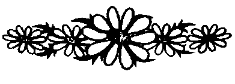

Mucizelere inanın ama asla onlara bel bağlamayın.
Durum ne olursa olsun, nezaketin size zarar vermeyeceğini unutmayın.
Bir geziden döndüğünüz gün harcamalarınızın listesini yapın.
Küçük şeyleri iyi yapmaktan dolayı mutlu olmasını bilin.
Her yıl, çocuklarınızın okula başladığı ilk gün onların fotoğrafını çekin.
Bir arkadaşınız hakkında iyi bir söz duyduğunuzda bunu ona iletin.
Doğru olduğunu bildiğiniz şeyi yapmaktan asla çekinmeyin.
Dikkat çekmek için iş yapmayın, dikkat çekecek iş yapın.
Çocuklarınızı, kardeşleri ya da sınıf arkadaşlarıyla kıyaslamayın.
Sivil toplum örgütlerine katlim.
Büyük zarar getirmeyecekse, bırakın çocuklarınız bildikleri gibi yapsın. Çünkü yaptıkları hatalardan, başkalarından öğrendiklerinden daha fazlasını öğreneceklerdir.

Her başarının bir bedeli olduğunu asla unutmayın.
Çocuklarınızın önünde eşinize kötü bir söz söylemeyin.
Çocuklarınız çoktan uyumuş olsalar bile onlara iyi geceler öpücüğü verin.
Can sıkıntısını egzersiz yaparak dağıtmaya çalışın.
Boğaza takılan bir şeyi çıkarma yöntemlerini öğrenin.
Yolculuk ederken cüzdan, otomobil anahtarı, gözlük ve ayakkabılarınızı yakınınızda bulundurun.
Eleştirmekle geçirdiğiniz zamanın iki katını övmeye ayırın.
Çocuklarınıza engelli bir kişiyi asla küçümsememeyi öğretin.
Gazetenin ekonomi sayfasını düzenli bir biçimde okuyun.
Yolculukta temel gereksinimlerinizin listesini yapın ve bavulunuzda tutun.
Çocuklarınızın televizyon izleme süresini ve programlarını sınırlayın.
Zarafeti modaya yeğleyin.
Kendinizi geliştirme konusunda her bulduğunuz fırsatı değerlendirin.
Kızınıza ya da oğlunuza da yemek yapmasını öğretin.
Her terslikte saklı olabilecek iyi fırsatı arayın.
Eve bir eşya alırken, deneyim kazanmaları için çocuklarınızı da yanınızda götürün.
Evde yapılan börek ya da kurabiyeleri iş yerine de götürünM
• Deneyimli insanları asla dikkate almazlık etmeyin.
• Yolunuza çıkan aksiliklerin, sizi amaçlarınızdan alıkoymasına izin vermeyin.
• Her gün mutlaka olumlu bir şey söyleyin.
• En sevdiğiniz sözü yazın ve görebileceğiniz bir yere asın.